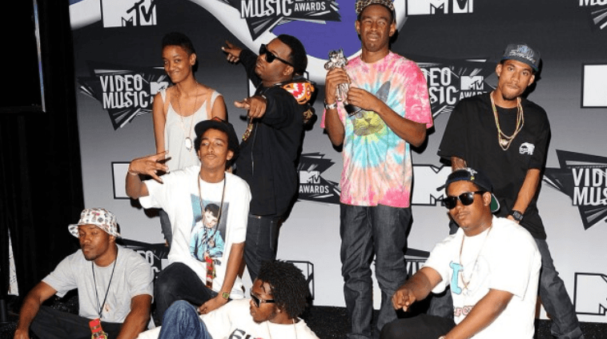
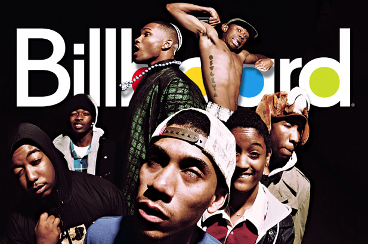
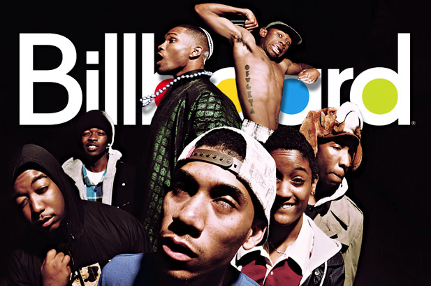
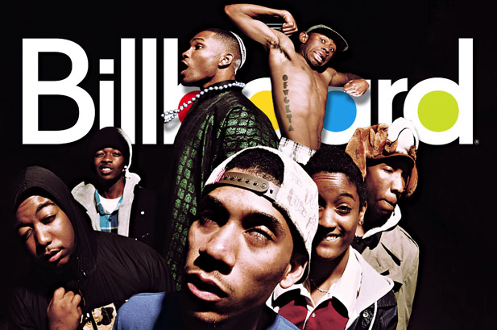

Okonma co-fundou o coletivo de hip hop alternativo Odd Future em 2007, ao lado de Hodgy, Left Brain e Casey Veggies. Eles lançaram sua mixtape de estreia, The Odd Future Tape, em novembro de 2008. Em 25 de dezembro de 2009, Okonma lançou independentemente sua primeira mixtape solo, Bastard. A mixtape foi classificada em trigésimo segundo lugar na lista dos principais álbuns de 2010 da Pitchfork Media. Em 11 de fevereiro de 2011, Okonma lançou o videoclipe de "Yonkers", o primeiro single de seu primeiro álbum de estúdio, Goblin, lançado em 10 de maio de 2011. O vídeo recebeu atenção de vários meios de comunicação on-line. Uma versão estendida com um terceiro verso foi disponibilizada no iTunes. Okonma ganhou o prêmio de Melhor Artista Novo por "Yonkers" no MTV Video Music Awards de 2011. O conteúdo temático de Okonma nesses dois primeiros projetos solo levou fãs e publicações a categorizá-lo como Horrorcore, embora ele rejeitasse veementemente sua conexão com com o horror rap. Após o lançamento de "Yonkers", Okonma anunciou que assinou um contrato de um álbum com a gravadora independente britânica XL Recordings. Okonma e seu colega da Odd Future Hodgy Beats fizeram sua estreia na televisão em 16 de fevereiro de 2011, quando tocaram "Sandwitches" no Late Night with Jimmy Fallon. Em 16 de março, Okonma e Hodgy cantaram "Yonkers" e "Sandwiches" no Woodvit Awards de 2011 da mtvU, juntando-se a outros membros da Odd Future durante "Sandwiches". Durante uma entrevista com Okonma para a Interview, Waka Flocka Flame expressou seu interesse em colaborar com o "líder" da Odd Future para dirigir um videoclipe para ele. No início de 2011, Okonma disse aos fãs através de sua conta no Formspring que seu segundo álbum seria chamado Wolf e que estava programado para ser lançado em maio de 2012. Okonma também anunciou que a Odd Future teria seu próprio programa de TV chamado Loiter Squad. Em 8 de setembro de 2011, o programa foi finalmente confirmado como um show de 15 minutos de live-action composto de vários esboços, pegadinhas e músicas feitas pela Odd Future. Dickhouse Productions, a parceria de produção que criou Jackass, foi programada para produzir o show.

 

